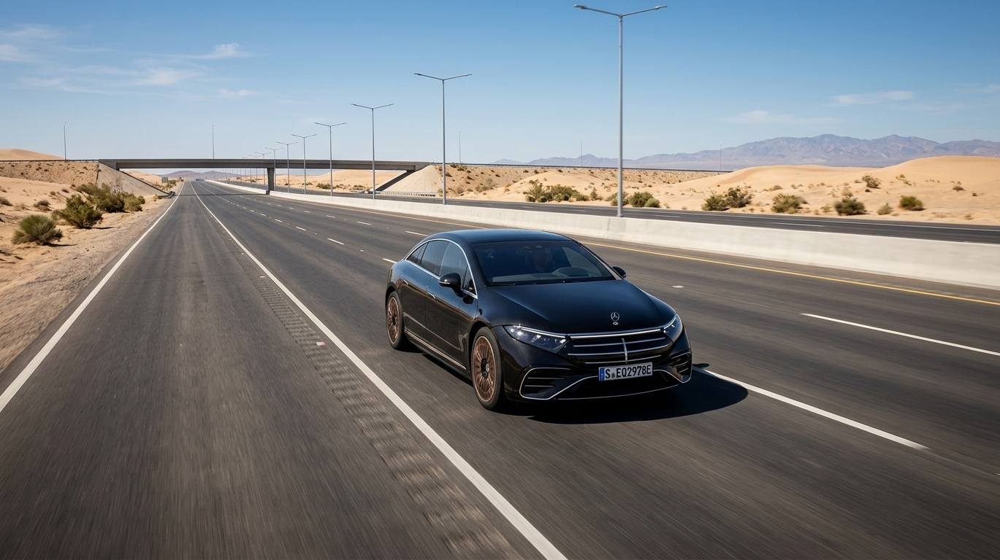
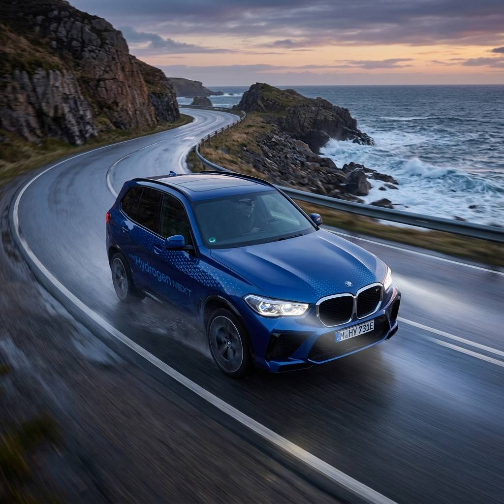
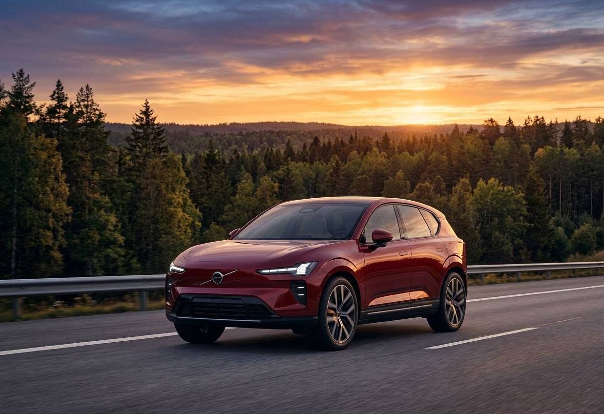

Llevo tiempo siguiendo cómo va evolucionando la autonomía homologada de los eléctricos, y hay un cambio que me parece importante señalar: ya no hablamos de una promesa lejana. A día de hoy existen varios modelos, tanto berlinas como SUV, que superan oficialmente los 800 km bajo el ciclo WLTP, el estándar de homologación europeo. En este artículo he querido centrarme exclusivamente en esos modelos, sin mezclarlos con los que se quedan en 700 o 799 km, para que la comparación sea lo más clara posible.
Antes de entrar en la lista, quiero dejar algo claro desde el principio: 800 km WLTP no significa 800 km reales. Voy a explicarte por qué, con las propias advertencias que hacen los fabricantes en sus datos técnicos.
¿Qué coches eléctricos tienen más de 800 km de autonomía?
A día de hoy, estos son los modelos que superan oficialmente los 800 km de autonomía WLTP, según los datos publicados por cada fabricante:
| Modelo | Autonomía WLTP | Situación |
|---|---|---|
| Lucid Air Grand Touring | Hasta 960 km | Disponible |
| BMW i3 50 xDrive | Hasta 906 km* | Disponible/pedidos |
| Mercedes-Benz EQS 450+ | Hasta 867 km | Disponible |
| BMW iX5 60 xDrive | Hasta 845 km* | Próximo |
| Volvo EX60 P12 AWD | Hasta 810 km* | Llegando al mercado |
| BMW iX3 50 xDrive | Hasta 805 km | Disponible |
* Algunos valores son provisionales según el propio fabricante, a la espera de homologación WLTP definitiva. Datos de autonomía máxima declarada por los fabricantes; no representan necesariamente la autonomía obtenida en condiciones reales de conducción.
Vamos a repasar cada uno de estos modelos por separado, porque cada uno aporta algo distinto a esta conversación.
Lucid Air Grand Touring: hasta 960 km
Si hay un coche que hoy encabeza claramente esta clasificación, ese es el Lucid Air Grand Touring. Lucid confirma una autonomía WLTP de entre 817 y 960 km, dependiendo de la configuración, y lo presenta como uno de sus principales argumentos de eficiencia. Estamos hablando de una batería de aproximadamente 112 kWh, un consumo combinado desde 13,5 kWh/100 km, una potencia de 611 kW (831 CV) y capacidad para recuperar hasta 400 km adicionales en solo 16 minutos de carga, según los datos oficiales de la marca.
Pero lo que de verdad me parece destacable es un dato que va más allá del laboratorio: en una prueba invernal organizada por la NAF (Norges Automobil-Forbund) en 2026, el Air Grand Touring consiguió 828,6 km reales en condiciones de invierno, según ha confirmado la propia Lucid.
💡 Un matiz importante:
960 km WLTP no son 960 km reales, pero el Lucid Air ha demostrado que puede acercarse mucho más que la mayoría a esa cifra incluso en condiciones exigentes de invierno.
BMW i3: hasta 906 km
El nuevo BMW i3 50 xDrive First Edition es una de las novedades más relevantes de este listado. BMW anuncia hasta 906 km WLTP para esta versión, aunque la propia marca explica que algunos valores de la gama todavía son provisionales a la espera de homologación completa.
Pero hay un dato que me parece incluso más interesante que la propia cifra de autonomía máxima: BMW afirma que el i3 puede recuperar hasta 400 km WLTP de autonomía en solo 10 minutos de carga, gracias a su nueva arquitectura de 800V, carga en corriente continua de hasta 400 kW, baterías de celdas redondas y arquitectura cell-to-pack de última generación.
🔑 Una idea que conviene tener presente:
La autonomía máxima importa, pero la velocidad de carga importa casi tanto como ella. Un coche que recupera 400 km en 10 minutos reduce drásticamente el tiempo real de un viaje largo, más allá de la cifra que aparezca en la ficha técnica.
Mercedes EQS: hasta 867 km
El Mercedes-Benz EQS demuestra que los 800 km no son exclusivos de los lanzamientos más recientes de 2026. Mercedes España ofrece actualmente tres configuraciones con cifras muy altas de autonomía: el EQS 400 llega a 785 km, el EQS 450+ alcanza hasta 867 km y el EQS 580 4MATIC se sitúa en 842 km, todas ellas en ciclo WLTP combinado, según los datos oficiales de la marca.

El EQS ya llevaba tiempo entre los referentes de autonomía antes de que llegaran estas nuevas generaciones de BMW y Volvo, y sigue siendo una opción de referencia en el segmento de berlinas eléctricas de gran autonomía.
BMW iX5: hasta 845 km
Este es uno de los modelos que estará más de actualidad en las próximas semanas. BMW España ya publica una cifra de 845 km WLTP provisionales para el iX5 60 xDrive, con pedidos previstos a partir del 8 de octubre de 2026.

La batería es de 141 kWh, la potencia de carga llega hasta 460 kW y BMW anuncia un tiempo de carga del 10% al 80% de unos 23 minutos. Aquí quiero ser especialmente cuidadoso: BMW todavía no dispone de homologación WLTP definitiva para este modelo, por lo que la cifra de 845 km debe tomarse como provisional hasta que se confirme oficialmente.
Volvo EX60: hasta 810 km
El Volvo EX60, en su versión P12 AWD, ofrece 810 km de autonomía, con una batería de 117 kWh, según los datos de Volvo Cars. Además, la marca anuncia un tiempo de carga del 10% al 80% de tan solo 16 minutos en determinadas condiciones, utilizando un cargador de 400 kW.

Me parece una de las mejores formas de resumir lo que representa este coche: el salto importante no es simplemente que un SUV eléctrico llegue a 800 km, sino que pueda hacerlo sin depender de las proporciones y la aerodinámica propias de una berlina de lujo. Aun así, conviene matizar que el EX60 P12 sigue siendo un vehículo grande, con una batería de 117 kWh, por lo que ese logro también tiene su explicación en el tamaño de su paquete de baterías.
BMW iX3: hasta 805 km
El BMW iX3 50 xDrive completa esta lista con 805 km WLTP. Según BMW España, su consumo se sitúa entre 15,1 y 17,9 kWh/100 km, admite carga en corriente continua de hasta 400 kW, puede recuperar hasta 372 km WLTP en solo 10 minutos, y completa el tramo del 10% al 80% en unos 21 minutos.

Coches eléctricos que se acercan a los 800 km
He decidido no mezclar en la lista principal los modelos que todavía no llegan a los 800 km, precisamente para mantener una definición clara del artículo. Pero merece la pena mencionar algunos que se acercan bastante, porque muestran cómo se está ampliando rápidamente la oferta de eléctricos de larga autonomía:
- Mercedes CLA 250+: hasta 789 km WLTP, según Mercedes-Benz.
- Mercedes CLA 350 4MATIC: hasta 768 km WLTP.
- Volkswagen ID.7 Pro S: hasta 702 km WLTP, según Volkswagen España.
Aunque todavía no alcanzan los 800 km, estos modelos confirman una tendencia de fondo que ya hemos analizado en nuestro artículo sobre futuros coches eléctricos: la autonomía media de la oferta disponible sigue subiendo año tras año.
¿Son reales los 800 km de autonomía?
Esta es, para mí, la sección más importante del artículo desde el punto de vista del rigor. Los 800 km que anuncian los fabricantes corresponden al ciclo WLTP, realizado en condiciones estandarizadas de laboratorio. La autonomía real que obtendrás en el día a día depende de la velocidad a la que circules, la temperatura exterior, la orografía del trayecto, el uso de la climatización, el tipo de neumáticos, la carga del vehículo (pasajeros y equipaje) y tu propio estilo de conducción.
Volvo lo explica de forma expresa: sus 810 km del EX60 se obtienen bajo condiciones estandarizadas de laboratorio, y factores como la temperatura, el viento, la topografía y la velocidad modifican la autonomía real. BMW hace una advertencia equivalente para el i3 y el iX3.
⚠️ Una aclaración necesaria:
No voy a darte cifras concretas de "autonomía real" para cada modelo, porque dependen de demasiadas variables como para generalizarlas de forma responsable. Lo que sí puedo decirte es que el Lucid Air Grand Touring ha demostrado, en una prueba real de invierno de la NAF, que es posible acercarse mucho a la cifra WLTP incluso en condiciones exigentes: 828,6 km reales frente a los 960 km homologados.
Un listado reciente publicado por coches.net sobre los eléctricos con mayor autonomía también señala expresamente que, para comparar correctamente entre modelos, conviene fijarse en el ciclo WLTP, ya que mezclar cifras WLTP con otros ciclos de homologación como el CLTC chino o el EPA estadounidense da lugar a comparaciones poco fiables.
¿Cuánto cuesta recorrer 800 km con un eléctrico?
Esta pregunta me parece tan importante como la propia autonomía, porque al final lo que interesa no es solo "cuántos km puedo hacer", sino "cuánto me va a costar hacerlos". Vamos a hacer un cálculo teórico sencillo.
Si un coche consume, de media, 15 kWh/100 km, recorrer 800 km requeriría aproximadamente 120 kWh. Con estos consumos:
- A 0,20€/kWh (tarifa en hora valle, cargando en casa): unos 24€
- A 0,30€/kWh (tarifa plana): unos 36€
- A 0,45-0,79€/kWh (cargador rápido público): entre 54€ y 95€ aproximadamente
Es importante entender que este es un cálculo teórico: el coste real depende del lugar donde cargues, las pérdidas de energía durante la carga y las condiciones concretas del trayecto. Si quieres profundizar en cómo reducir al máximo este coste, te recomiendo nuestra guía sobre cómo ahorrar en electricidad cargando tu coche eléctrico.
¿Son necesarios 800 km de autonomía?
Mi opinión, después de repasar todos estos datos, es que la respuesta no es un simple "sí" o "no". Hay tres factores que hay que valorar juntos, no por separado:
- Autonomía: 800 km WLTP significa que el coche tiene una reserva homologada enorme, que en la práctica se traduce en una autonomía real muy alta incluso en condiciones desfavorables.
- Velocidad de carga: un coche que recupera 300-400 km en 10-15 minutos reduce muchísimo el tiempo total de un viaje largo, a veces más que tener simplemente "más batería".
- Infraestructura: puedes tener 900 km de autonomía, pero para viajar con tranquilidad por España sigues necesitando una red de carga rápida suficientemente disponible en tu ruta.
Para la inmensa mayoría de los conductores, cuyo uso diario no supera los 50-100 km, una autonomía de 800 km es, sencillamente, mucho más de lo que necesitan en el día a día. Donde sí marca la diferencia es en los viajes largos, reduciendo el número de paradas necesarias para completar un trayecto.
¿Cuándo llegarán los coches eléctricos de 1.000 km?
Con los datos que tenemos hoy, la barrera de los 1.000 km ya no parece tan lejana. El Lucid Air Grand Touring ya se sitúa en 960 km WLTP, el BMW i3 supera los 900 km y el Mercedes EQS 450+ pasa de los 850 km. La tecnología se está acercando con rapidez, y varios fabricantes, como Toyota, trabajan en baterías de nueva generación orientadas específicamente a superar esa cifra, combinando mayor densidad energética con menor peso y mejor aerodinámica, tal y como explicamos con más detalle en nuestro artículo sobre futuros coches eléctricos.
Preguntas frecuentes sobre coches eléctricos con 800 km de autonomía
FAQ – Coches eléctricos con 800 km de autonomía
🔹 ¿Qué coche eléctrico tiene más autonomía?
Actualmente el Lucid Air Grand Touring es el coche eléctrico con mayor autonomía homologada, con hasta 960 km WLTP según datos de Lucid. Le siguen el BMW i3 50 xDrive First Edition (hasta 906 km, cifra provisional según BMW), el Mercedes-Benz EQS 450+ (867 km WLTP) y el próximo BMW iX5 60 xDrive (845 km WLTP provisionales).
🔹 ¿Los 800 km WLTP de autonomía son reales?
Los 800 km WLTP se obtienen bajo condiciones estandarizadas de laboratorio. Volvo explica expresamente que factores como la temperatura, el viento, la topografía y la velocidad modifican la autonomía real del EX60, y BMW hace una advertencia equivalente para el i3 y el iX3. En la práctica, la autonomía real suele ser inferior a la WLTP, aunque el Lucid Air Grand Touring logró 828,6 km reales en una prueba de invierno de la NAF en 2026, según la propia Lucid, acercándose de forma notable a su cifra homologada.
🔹 ¿Hay coches eléctricos con 1.000 km de autonomía?
Todavía no hay ningún modelo de producción homologado con 1.000 km WLTP, aunque el Lucid Air Grand Touring ya se sitúa muy cerca, con hasta 960 km. Varios fabricantes, como Toyota, trabajan en baterías de nueva generación orientadas a superar esa barrera en los próximos años, combinando mayor densidad energética con menor peso y mejor aerodinámica.
🔹 ¿Cuánto cuesta recorrer 800 km con un coche eléctrico?
Depende del consumo del vehículo y del precio de la electricidad. Con un consumo medio de 15 kWh/100 km, recorrer 800 km requiere unos 120 kWh. A un precio de 0,20€/kWh (tarifa en hora valle), el coste sería de unos 24€; a 0,30€/kWh (tarifa plana), rondaría los 36€. Son cálculos teóricos: el coste real depende del lugar de carga (casa o cargador público), las pérdidas de carga y las condiciones de conducción.
Conclusión
El club de los eléctricos con 800 km de autonomía ha dejado de ser una excepción para convertirse en una realidad con varios modelos disponibles o a punto de llegar: el Lucid Air Grand Touring, el BMW i3, el Mercedes EQS, el próximo BMW iX5, el Volvo EX60 y el BMW iX3. Cada uno aporta algo distinto: unos destacan por su eficiencia, otros por su velocidad de carga, y otros por demostrar que incluso un SUV grande puede acercarse a estas cifras.
Mi recomendación, como siempre, es no quedarte solo con el número de la ficha técnica. Autonomía, velocidad de carga e infraestructura disponible en tu zona son las tres piezas que determinan si realmente vas a notar la diferencia de tener 800 km frente a 500 o 600. Iré actualizando este artículo a medida que se confirmen las homologaciones definitivas de los modelos que hoy todavía manejan cifras provisionales, como el BMW iX5 y el Volvo EX60.
Fuentes consultadas
- Mercedes-Benz España — Ficha y autonomía del EQS
- BMW España — BMW i3: autonomía y especificaciones
- Volvo Cars — Primeras entregas del Volvo EX60
- BMW España — BMW iX5: autonomía y tiempos de recarga
- Volvo Cars — Factores que afectan a la autonomía real
- Lucid Group — Prueba de invierno NAF 2026: 828,6 km reales
- BMW Group PressClub — El nuevo BMW i3, segundo modelo de la Neue Klasse
- BMW España — BMW iX3: vista general, configurador y precios
- Volvo Cars España — Especificaciones del Volvo EX60
- Mercedes-Benz España — CLA Eléctrico: precios y especificaciones
- Volkswagen España — ID.7: autonomía y versiones
- Coches.net — Los coches eléctricos con mayor autonomía